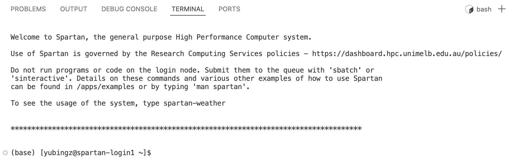
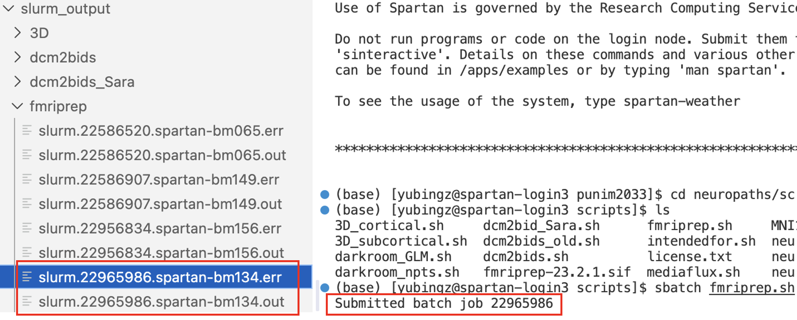

3c. Spartan (UoM HPC)#
The University of Melbourne’s High Performance Computing (HPC) system is called Spartan, and in normal people terms, is our collection of insanely powerful computers that act as a massive computing resource that researchers can tap into to do tasks that require lots of computing power.
The Official Documentation is your primary reference and should be read before you start using Spartan. However, for a quick basic guide, keep reading.
Getting Access#
Connecting to Spartan via VSCode
There are a few ways to access Spartan, the most accessible being directly through VSCode. For the first-time setup:
You will need to install an extension in VSCode called Remote - SSH. Like the other extensions, go to your extensions tab in VSCode and type the name of the extension in, and install it. You may need to restart VSCode for it to install.
Click the top search bar and select the option Show and Run: Commands
Type Remote-SSH: Add New SSH Host and select that command.
When prompted, enter
ssh <YOUR_USERNAME>@spartan.hpc.unimelb.edu.auand press enter.When prompted, enter
<YOUR_UNIMELB_PASSWORD>.
For subsequent connections:
Open the command palette and select Remote-SSH: Connect to Host.
Select
spartan.hpc.unimelb.edu.auand press enter.When prompted, enter
<YOUR_UNIMELB_PASSWORD>.
If you have successfully logged in, you should see something like this:

Advanced Usage#
This section walks you through key workflows and common issues when running jobs on Spartan.
Understanding SBATCH Directives
To use Spartan, you create shell scripts that you can submit to the HPC to do tasks. The actual code will likely be pretty advanced and niche depending on your project. Regardless, all of these scripts begin with a long chunk of code that is meant for Spartan to read (see below for example):
#!/bin/bash
#SBATCH --account=punim2033
#SBATCH --ntasks=1
#SBATCH --cpus-per-task=32
#SBATCH --nodes=1
#SBATCH --job-name='fmriprep'
#SBATCH --time=0-20:00:00
#SBATCH --partition=sapphire
#SBATCH -o /data/gpfs/projects/punim2033/safety_learning/slurm_output/fmriprep/slurm.%j.%N.out
#SBATCH -e /data/gpfs/projects/punim2033/safety_learning/slurm_output/fmriprep/slurm.%j.%N.err
Here is a break down of each line:
#SBATCH --account=punim2033: specifies which project or account will be charged for the job’s resource usage.#SBATCH --ntasks=1: defines the number of tasks to be run for the job. This is typically1for single-process jobs like fMRIPrep.#SBATCH --cpus-per-task=32: requests a specific number of CPU cores to be allocated to each task.#SBATCH --nodes=1: allocates a specific number of compute nodes for the job.#SBATCH --job-name='fmriprep': assigns a descriptive name to the job for identification.#SBATCH --time=0-20:00:00: sets the maximum time limit for the job (D-HH:MM:SS).#SBATCH --partition=sapphire: directs the job to be run on a specific partition (e.g.,sapphire) of the HPC cluster.#SBATCH -o&#SBATCH -e: specifies the file paths for capturing the job’s standard output and error logs.
Using Job Arrays
Job arrays allow you to submit a large number of independent jobs at once using the same job script. For example, by defining the array index as the participant number with export sub=${SLURM_ARRAY_TASK_ID}, setting #SBATCH --array=1-10 will run the script for participants 1 to 10.
You can also customise the array range in a few ways:
--array=1-4,6,8-20: skips participants 5 and 7.--array=0-10%4: runs up to 4 jobs simultaneously.
Output and Error Logs
If your script is not working as expected, the first place to check is the output and error logs. These are stored in the folder specified at the beginning of your script (e.g., /data/gpfs/projects/punim2033/safety_learning/slurm_output/fmriprep/slurm.%j.%N.out) and named after the Job ID. Some common errors are:
No such file or directory: likely means your input file is not in the expected folder.Command not found: likely means the command is misspelled or the relevant package is not installed.

Things to Note#
Do Not Execute Tasks Directly in the Terminal
It is very important that you do not run your code directly in the terminal (the login node). The terminal should only be used for basic tasks such as browsing files, moving files, and submitting jobs to the queue.
Running computationally intensive tasks on the login node affects all other users sharing it. The Spartan administrators will terminate your job if this happens, and repeated violations may result in your account being suspended.
Managing Storage Constraints
Spartan does not support processing data stored on external systems (e.g., Mediaflux). You will always need to transfer your data onto Spartan first. However, the Spartan project directory may not have enough space to store all the data you need to process, which is especially common during MRI data analysis.
One approach is to use Spartan’s temporary storage /tmp for your raw input data, and save only the outputs to the project directory. Note that /tmp is automatically cleaned up once the job has finished. See also Managing Data.
File/Folder Permission
You may not have permission to access scripts or folders created by other users.
In this case, you won’t be able to run the script and may not have any error logs
(if you don’t have write permission to the log folder). Use ls -l /path/to/file_or_folder to check. The output may look something like -rwxrw-r-- yubingz punim2033, where:
Position 1: file type (
-= file,d= directory)Positions 2–4: owner’s permissions (
rwx= read, write, execute)Positions 5–7: project members’ permissions (
rw-= read and write)Positions 8–10: all other Spartan users’ permissions (
r--= read only)
In the above example, only the owner yubingz has full access to the file, while other project members cannot execute it.